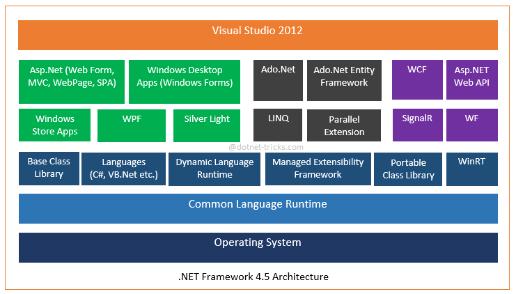
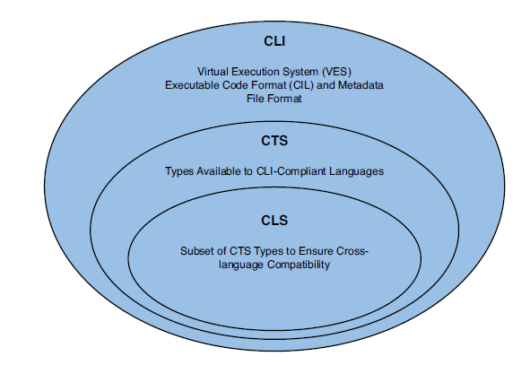

C# course
Lecture 1
.NET basics
Agenda
- .NET history
- available versions of .NET frameworks
- CLR, Managed code, MSIL overview, JIT-compilation
- C# and other languages in .NET family
- Visual Studio overview
- How to organize code
.NET history
.NET ver |
CLR ver |
Release |
Dev tool |
Features |
|---|---|---|---|---|
1.0 |
1.0 |
2002-02-13 |
VS .NET |
C#, VB, BCL |
1.1 |
1.1 |
2003-04-24 |
VS .NET 2003 |
API changes |
2.0 |
2.0 |
2005-11-07 |
VS 2005 |
64x support, partials, nullable, anonymous methods, iterators, generics |
3.0 |
2.0 |
2006-11-06 |
Expression Blend |
WPF, WCF, WWF |
.NET ver |
CLR ver |
Release |
Dev tool |
Features |
|---|---|---|---|---|
3.5 |
2.0 |
2007-11-19 |
VS 2008 |
lambda-expressions, LINQ, ASP.NET MVC |
4.0 |
4.0 |
2010-04-12 |
VS 2010 |
TPL, dynamic, code contracts |
4.5 |
4.0 |
2012-08-15 |
VS 2012 |
async/await |
4.5.1 |
4.0 |
2013-10-17 |
VS 2013 |
improvements |
4.5.2 |
4.0 |
2014-05-05 |
- |
High DPI for WinForms |
4.6 |
4.0 |
2015-07-20 |
VS 2015 |
new JIT compiler (RyuJIT), cryptographic enhancements |
.NET key features
- Object-oriented programming
- Support for multiple languages
- Easy component-based development (assembly concept - metadata, version and code in the same place, no head files required)
- Simplified application deployment (just xcopy)
- Rich base class library support
- Unified runtime infrastructure
- Exception handling
.NET Languages

.NET Framework architecture

CLR - common language runtime
CLR is a runtime environment that manages the execution of code and provides services that improves development, deployment and run time.
Services provided by CLR
- managed code
- cross-language operability
- JIT compiler
- common type system (CTS)
- code and memory management
- reflection
- garbage collection
- debugging, profiling and diagnostics
CLR architecture

Buzzwords
- .NET - is the most general name of technology that MS provides (includes tools, infrastructure, code framework etc)
- CLR - runtime which runs code and does a lot of additional services (heart of .NET)
- CLI - public specification of .NET (using this specification project MONO was created)
- CTS - subset of types which must be supported of all languages to support interoperability
- CLS - is a set of rules on which all .NET languages should be based to make sure no types are exposed that some languages cannot deal with.
Types sets

CTS - Common Type System

JIT compilation
- Explicit vs Implicit compilation
- MSIL - MS Intermediate language (low level instructions code)
- MSIL ≠ Machine code (every time, MSIL runs, it’s recompiled again to machine code)
- JIT compiler ≠ Bytecode interpreter (JIT compiles code at runtime and re-use compiled code at next invocations)
- JIT uses such techniques as adaptive optimization and dynamic recompilation which may significantly increase productivity in comparison with static compilation
Compilation Flow

Managed code
“Managed code is a term coined by Microsoft to identify computer program source code that requires and will execute only under the management of a Common Language Runtime virtual machine, typically the .NET Framework, or Mono.” © Wikipedia
Managed code
- machine independent.
- is code that runs on CLR and is fully managed by CLR (including cleaning up memory, reflecting metadata etc)
- provided with metadata which describe types and allows different tools inspect types.
.NET Assemblies
- Assembly - is a chunk of MSIL code that can be run in .NET runtime
- Assembly - is a logical unit, not physical (can include multiple classes, resources and can be executable)
Assembly contains
- manifest (metadata about the assembly itself - name, version, culture, public key and digital signature)
- type metadata (Completely describes all types defined in an assembly + attributes)
- managed code
- resources
.NET Assemblies - GAC
GAC - Global Assembly Cache:
- a solution to keep DLLs globally accessible without worrying about conflicts
- stores assemblies shared across few applications
- located at C:\Windows\Assembly
- to add an assembly to GAC, use gacutil
CLI (ECMA 335)
CLI - Common Language Infrastructure - is an open specification developed by Microsoft and standardized by ISO and ECMA that describes the executable code and runtime environment.
CLI describes
- Common Type System (CTS)
- Metadata Definition and Symantics
- Common Intermeadiate Language (CIL)
- Common Language Specification (CLS)
CLI existing implementations
About:C#
C# key features
- Strong-typed - all types are strongly controlled by runtime
- Modern - supports, automatic garbage collection, modern approach to debugging, rich model for error handling, decimal data type for financial application and robust security model.
- Type-Safe - does not permit unsafe casts, enforces overflow checking, use of any uninitialized variables produces an error
- Compatible - enforces the .NET CLS and allows interoperation with other .NET language
- Flexible - delegate classses instead of pointers
- Inter-Operability - supports COM objects and native API
Source Code Editors
- Visual Studio 20xx (commercial/free) - supports the latest version of C#
- SharpDevelop (free) - still alive :)
- MonoDevelop (free) - supports C# 4
Exotic:
Visual Studio
- Ultimate - full possible functionality
- Premium - for development. testing and prototyping
- Profesional - might be used for development
- Express (outdated) - limited version of Professional
- Community - free for even commercial use - the same functionality as Profesional
Visual Studio - code organization
Visual Studio provides two containers to help you efficiently manage the items that are required by your development effort - solutions and projects
- Solution - contain items that you need in order to create your application. Solution contains projects, solution folders, solution files and metadata.
- Project - are used in a solution to logically manage, build, and debug the items that make up your application.
Filetypes: .cs, .vb, .csproj, .sln, *.suo etc